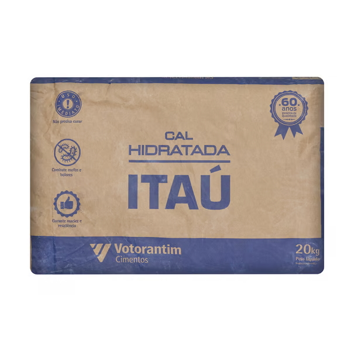

Cal hidratada para construção civil 20Kg - Votoran
Preço: R$17,50/cada
Descrição detalhada
| Produto | Cal |
|---|---|
| Tipo | Hidratada |
| Marca | Votoran |
| Peso | 20,00 kg |
| Tipo de embalagem | Saco |
| Uso indicado | Para assentar tijolos, reboco, massa fina etc. |
Preço: R$17,50/cada
| Produto | Cal |
|---|---|
| Tipo | Hidratada |
| Marca | Votoran |
| Peso | 20,00 kg |
| Tipo de embalagem | Saco |
| Uso indicado | Para assentar tijolos, reboco, massa fina etc. |